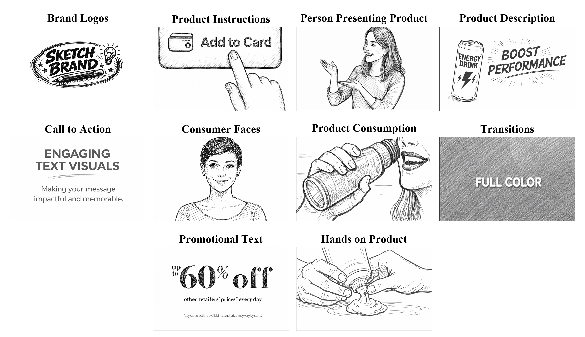

Job Market Paper
Learning Interpretable Building Blocks of Video Creatives
Video advertisers often have multiple visual assets, such as presenter shots, product demonstrations, usage scenes, text claims, and brand logos, but limited empirical guidance on how to order these assets within a single ad. We develop an interpretable video-analytics framework that represents each ad as a storyboard: an ordered sequence of recurring visual concepts learned from video data. Rather than representing ads through opaque embeddings, the model groups video frames into a compact vocabulary of recognizable visual concepts and uses the resulting concept sequence to predict brand recall. Applying the framework to 2,205 real-world video advertisements, we recover a compact set of recurring visual concepts, including People Presenting Product, Consumer Faces, Product Consumption, Product Descriptions, and Brand Logos. The storyboard model approaches the predictive performance of a black-box temporal transformer while making predictions more interpretable: it identifies positions in the ad sequence where each visual concept is most strongly associated with higher predicted recall. We then conduct a controlled experiment to evaluate model-guided resequencing. Holding visual clips fixed, the model-recommended sequence produces higher brand recall than the original sequence and random-sequence controls. Together, the results show how interpretable video models can help ad editors diagnose and revise the sequencing of existing visual assets.

Selected Research
Visual Homophily in Consumer Imagery: A New Behavioral Signal for Preference Modeling
Across platforms such as Yelp, TripAdvisor, and Google Reviews, consumers share millions of photos capturing what they eat, where they go, and how they experience brands. These images are more than decoration; they are expressions of taste. This research introduces visual similarity, the degree to which a consumer's photos resemble those of a business, as a behavioral signal of preference alignment. Using over five million Yelp photos from 20,000 restaurants, we measure two forms of similarity: object similarity (what is shown) and aesthetic similarity (how it looks). Both forms of similarity predict subsequent five-star evaluations beyond structured attributes, review text, and image-quality controls. Object similarity is especially informative for content such as food, whereas aesthetic similarity is particularly useful when ambiance, presentation, and atmosphere are salient. From a managerial perspective, visual similarity offers a scalable way to incorporate consumer imagery into personalization and brand strategy. Platforms can enhance recommendations by matching businesses with consumers who see the world similarly, while relying less heavily on demographic targeting. Businesses can use the same logic to assess whether their consumer-generated imagery resonates with the audiences they seek to attract. By showing that the visual traces consumers leave behind contain preference-relevant information, this work reframes consumer photos as actionable behavioral data linking visual expression, preference alignment, and marketplace experience.

Encouraging Artificial Intelligence Adoption: Experimental Evidence from an Educational Platform
Generative AI tools are increasingly embedded in digital platforms, yet their benefits hinge not only on how many users adopt them but also on who adopts them. We study how platforms can steer both adoption and adopter composition through information design. In a preregistered field experiment conducted with a large coding-education platform during a nationwide competition (8,819 participants), we randomly vary the introduction message of an in-house AI assistant. We find that emphasizing either downstream performance gains or privacy protection, layered on an identical baseline capability description, increases usage by roughly 2.5 percentage points over a 35-day period. However, the two information treatments have sharply different distributional consequences: performance information disproportionately attracts male students and students from more selective universities, whereas privacy information does not show a similar effect. These findings contribute to research on technology adoption and information design by showing that usefulness- and trust-oriented framings can generate similar average adoption gains while meaningfully shifting who participates, highlighting adopter composition as a first-order outcome in AI settings where interaction data are an input to learning and where equity concerns are salient.

When Safety Constrains Creativity: Evidence of AI Content Moderation on User Engagement
As generative AI platforms mature, content moderation policies are tightening in response to legal, copyright, and brand-safety concerns. While stricter moderation enhances compliance and legitimacy, it may simultaneously reduce perceived creative freedom and increase generation refusals, potentially affecting user engagement and subscription behavior. We study the behavioral and economic consequences of AI content moderation tightening in partnership with a large technology firm operating a commercial AI content-generation platform.